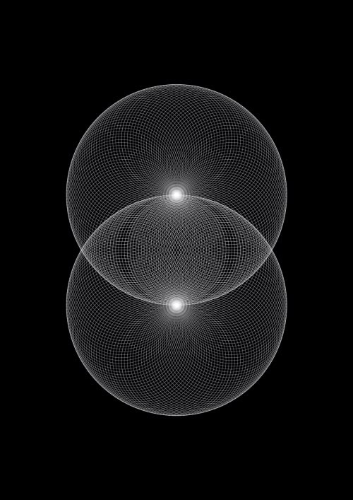

¿Por qué repites los mismos patrones en tu vida y en tus relaciones?
La mirada profunda del inconsciente

Hay momentos en la vida en los que algo dentro nuestro se pregunta:
"¿Cómo llegué otra vez aquí?"
Otra relación que duele parecido.
Otra situación laboral donde terminamos apagándonos.
Otra vez sintiendo abandono, rechazo, exigencia o vacío.
Distintas personas, distintos escenarios… pero la sensación de fondo parece repetirse.
Y aunque muchas veces creemos que el problema está afuera, la mirada transpersonal y junguiana nos invita a observar algo más profundo:
No repetimos porque sí.
Repetimos porque hay algo en nosotros que todavía busca ser visto.
El patrón no es casualidad
Carl Jung decía que aquello que no hacemos consciente, aparece en nuestra vida como destino.
Los patrones repetitivos suelen ser movimientos inconscientes. Formas aprendidas de vincularnos, protegernos o sobrevivir emocionalmente que alguna vez tuvieron sentido… pero que hoy quizás ya no nos permiten crecer.
A veces el patrón se expresa así:
- Elegir personas emocionalmente no disponibles.
- Sentir que debemos "salvar" a otros.
- Callarnos para evitar conflicto.
- Exigirnos hasta agotarnos.
- Postergar constantemente lo que deseamos.
- Volver a lugares que ya sabemos que nos hacen daño.
Y lo más desconcertante es que muchas veces lo vemos… pero aun así volvemos.
El inconsciente busca completar lo que quedó abierto
Desde una mirada profunda del alma, repetimos experiencias porque existe una parte interna intentando resolver algo pendiente.
No necesariamente desde la lógica.
Sino desde la emoción, la memoria corporal y el inconsciente.
Por ejemplo:
Una persona que creció sintiendo poco reconocimiento quizás de adulta busque constantemente aprobación, incluso en vínculos donde nunca termina de sentirse suficiente.
Alguien que aprendió que amar es sacrificarse puede terminar confundiendo amor con sufrimiento.
Otra persona que vivió rechazo emocional tal vez desarrolle una gran independencia… pero al mismo tiempo sienta miedo real a la intimidad.
El patrón no aparece para castigarnos.
Aparece para mostrarnos algo.
Lo conocido también genera apego
Incluso cuando un patrón duele, el sistema interno lo reconoce como familiar.
Y el ser humano suele sentirse más seguro en lo conocido que en lo nuevo.
Por eso muchas veces elegimos inconscientemente lo que ya sabemos habitar: la espera, la carencia, la exigencia, la sobreadaptación, el abandono emocional.
Aunque una parte nuestra quiera cambiar, otra parte todavía cree que eso es "amor", "normalidad" o "la única forma posible".
El momento en que comienza la transformación
La transformación empieza cuando dejamos de preguntarnos solamente:
"¿Por qué me pasa esto?"
Y comenzamos a preguntarnos:
- ¿Qué parte de mí participa en esta repetición?
- ¿Qué emoción antigua se activa aquí?
- ¿Qué necesidad profunda hay detrás?
- ¿Qué estoy intentando sostener o evitar?
- ¿Quién sería yo sin este patrón?
Ese es el inicio de la toma de conciencia.
Y aunque muchas veces queremos cambiar rápido, algunos patrones necesitan ser escuchados antes de poder soltarse.
Porque detrás del autosabotaje suele haber dolor.
Detrás del control, miedo.
Detrás de la dependencia, necesidad de amor.
Detrás de la repetición… una parte del alma intentando volver a sí misma.
Sanar no es convertirse en otra persona
Sanar no significa dejar de sentir.
Ni volverse perfecto.
Ni "elevarse" por encima de lo humano.
Sanar es poder mirar con honestidad aquello que repetimos sin juicio, comprendiendo que cada patrón tuvo una función.
Y desde ahí, elegir diferente.
A veces el cambio comienza en algo pequeño:
- poner un límite,
- dejar de perseguir,
- escuchar el cuerpo,
- decir lo que sentimos,
- elegirnos,
- detener una reacción automática,
- habitar el silencio sin correr a llenar el vacío.
Pequeños movimientos conscientes transforman historias enteras.
Tal vez sea una invitación del alma, una puerta que insiste hasta que podamos atravesarla con más conciencia.
Porque aquello que se repite, cuando es mirado, comprendido e integrado, puede ser un regalo de la vida que viene a despertarnos.